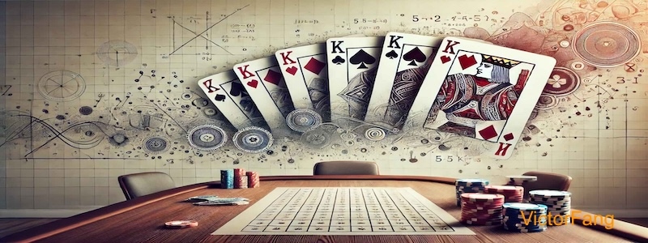

Introduction
This Python script simulates dealing cards from two decks to four players and calculates the probability of getting four, five, six, seven, or eight of a kind in a player's hand.
Creating a Double Deck
The create_double_deck function creates a double deck of cards, including four jokers.
def create_double_deck():
suits = ['♠', '♣', '♥', '♦']
numbers = ['2', '3', '4', '5', '6', '7', '8', '9', '10', 'J', 'Q', 'K', 'A']
deck = [(num, suit) for num in numbers for suit in suits] * 2
jokers = [('Joker', 'Black'), ('Joker', 'Red')] * 2
deck.extend(jokers)
return deck
This function generates a list of tuples representing each card in the deck.
Dealing Cards
The deal_cards function shuffles the deck and deals the cards to players.
def deal_cards(deck, num_players=4):
random.shuffle(deck)
cards_per_player = len(deck) // num_players
hands = [deck[i * cards_per_player:(i + 1) * cards_per_player] for i in range(num_players)]
return hands
This function ensures each player receives an equal number of cards.
Checking for N of a Kind
The has_n_of_a_kind function checks if a hand contains n cards of the same number.
def has_n_of_a_kind(hand, n):
numbers = [card[0] for card in hand]
return max(Counter(numbers).values()) >= n
This function uses the Counter class to count occurrences of each card number.
Running the Simulation
The run_simulation function runs multiple simulations to calculate probabilities.
def run_simulation(num_simulations=100000):
results = {4: 0, 5: 0, 6: 0, 7: 0, 8: 0}
for _ in range(num_simulations):
deck = create_double_deck()
hands = deal_cards(deck)
for n in results.keys():
if any(has_n_of_a_kind(hand, n) for hand in hands):
results[n] += 1
probabilities = {n: count / num_simulations for n, count in results.items()}
return probabilities
This function simulates the game multiple times to estimate the probability of different outcomes.
Example Hand Visualization
The main function demonstrates an example deal and highlights significant hands.
Monte Carlo Simulation: History and Facts
Monte Carlo Simulation is a technique that uses randomness to solve problems that might be deterministic in principle. It was named after the Monte Carlo Casino in Monaco, reflecting the element of chance and gambling.
- Origin: The method was developed by scientists working on the Manhattan Project during World War II, notably by Stanislaw Ulam and John von Neumann.
- Applications: It is used in various fields such as finance, engineering, supply chain, and project management to model the probability of different outcomes in a process that cannot easily be predicted due to the intervention of random variables.
- Interesting Fact: The Monte Carlo method was first used to simulate neutron diffusion in nuclear fission.
- Modern Use: Today, Monte Carlo simulations are used in risk analysis and decision-making processes, providing a range of possible outcomes and their probabilities.